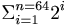

De: La Frikipedia, la enciclopedia extremadamente seria.
De: La Frikipedia, la enciclopedia extremadamente seria. De: La Frikipedia, la enciclopedia extremadamente seria.
«Deje vuesa merced a un lado los juegos de supuesta cultura, deje el azar, deje los dados; ¡Ah...! Si lo que vuesa merced quiere es pensar, juegue al ajedrez.»
~ Garry Kasparov de su inicio en el ajedrez
He aquí la típica historia que se narra en Matemática como introducción a las sucesiones. Aunque es falsa, merece la pena su mención:
El rey de la India Iadava, perdió a su hijo en una campaña. Tal pérdida le produjo una tristeza que sólo terminó cuando un joven llamado Sessa le presentó un juego que él mismo había ideado, el ajedrez. Iadava quedó maravillado por el juego y quiso recompensar a Sessa, quien le pidió  granos de trigo. No pudo pagarle tal capricho, por lo que optó por convertirle en primer visir.
Destaquemos que gracias a la invención de este juego por parte de Sessa, Iadava se olvidó de su hijo por completo. Como dice el refrán, un clavo quita a otro.
Se trata de una matriz cuadrada de 8 columnas cuyos elementos van alternando su color.
Sea un tablero de ajedrez de colores A y B. Si una casilla no es A, necesariamente ha de ser B. Si en un tablero esto no se verifica, es porque no es de ajedrez.
Cada ejército se compone de 16 piezas:
Carne de cañón para muchos, esta pieza mueve verticalmente de una en una (aunque la primera vez puede mover dos casillas) y captura en diagonal. En condiciones normales, su muerte suele ser despreciada. En cuanto a su armamento, luce una mediocre armadura ligera y porta una lanza.
Sin duda alguna, son la pieza con más cojones, ya que jamás se echan atrás
El lema de todo peón es <<la unión hace la fuerza>>.
Esta unidad, cuyo movimiento es de la forma L, se presenta a la batalla equipado con armadura pesada y espada, montado en un caballo que le permite saltar por encima de las demás unidades. Uno de los dos es amante de la reina.
Mueve cualquier dirección siempre y cuando ésta sea en diagonal. Su vestimenta consite en una túnica característica del clero. Va armado con un crucifijo-cuchilla y es un mago conocedor de los poderes de la electricidad.
Uno de los dos pretende matar al otro y después hacerse con el trono, tras la muerte del rey. La putada es que cada uno va por casillas de un color y no se encuentran, por lo que se pasarán la vida intentando matarse sin éxito
Mueve horizontalmente o verticalmente, sin límites. La única manera de entender cómo una torre se puede mover es aceptando que posee voluntad propia. Es fuerte y resistente.
Su movimiento es una combinación del del cardenal y del de la torre. Es una archimaga, conocedora de los Poderes del Fuego y los del Espacio y el Tiempo. Su inmenso poder puede diezmar las legiones enemigas, aunque a veces es tan imprudente que puede perder la vida incluso a manos de un humilde peón. Mentalizada de que su maná no es infinito, guarda una daga en la espalda. Respecto su edad, se sabe que es 30 años más joven que su esposo, el rey. Quizá por ello se haya encaprichado de uno de los caballeros.
Si bien los escorpiones se suicidan, la reina tratará de seducir a su atacante si se siente acorralada.
Su movimiento es como el de la reina, con la excepción de que únicamente puede mover una casilla. Está armado con una bomba y polvos mágicos encogedores. También suele atacar con su cetro de guerra. Luce las vestimentas y la corona digna de un rey y se ha demostrado que tiene más de una mujer.
Su muerte supone el final de la guerra, y por tanto la victoria enemiga.
De cómo la reina carbonizó a los peones en un abrir y cerrar de ojos; de cómo al rey se le subieron los cojones a la garganta; y de cómo éste optaría por esconderse tras la torre del este.
Extraído de la bitácora de guerra de S.M. el Rey Sol.
Una pieza puede capturar a otra enemiga si ésta se encuentra en una casilla de su trayectoria (si está en jaque). Teniendo esto en cuenta, se define el campo de jaque como la perturbación que crea una pieza en el tablero por el mero hecho de poseer capacidad de movimiento, de manera que una partida de ajedrez puede considerarse como el desarrollo de una serie de interacciones entre las piezas. Así pues, se puede decir que la intensidad en una casilla será mayor cuanto mayor sea el número de trayectorias de piezas a las que pertenezca, dando lugar a repulsiones o atracciones.
A veces se compara las perturbaciones creadas por el caballero con las emisiones radiactivas de neutrones, debido a que puede atravesar libremente las piezas cuando mueve.
Finalmente, nótese que el final de la partida (el jaque mate) se trata de la resultante total del sistema.
«Deja, deja, que sea el peón quien muera.»
~ El caballero al cardenal sobre el peón
El sumum del peón es alcanzar la última casilla de su trayectoria, para poder promocionar y demostrar lo que verdaderamente vale. Puede promocionar a caballero, a cardenal, a torre o a reina. Dado que todos los peones tienden a promocionar a reina, podemos sacar las siguientes conclusiones:
No hemos empleado los términos "alfil" y "caballo" porque, respecto al primero, según Wikipedia "alfil" significa "elefante", y los ejércitos europeos no utilizaban elefantes.
Respecto al segundo, un caballo no puede servir a un ejército por sí solo, y mucho menos saber a quiénes tiene que proteger y a quiénes matar. Es preferible hablar de caballeros, pues.
[EL PALIZÓN MÁS HUMILLANTE POSIBLE] Realmente es tablas por ahogado. Nadie te ha dicho que muevan las negras, listo
Fundador de la familia Lopéz y el mas antiguo campeon de ajedrez "no oficial", (¡Del 1560 aunque ud. no lo crea!), creador de la partida Española o Ruy Lopez:"1.e4 e5 2.Cf3 Cc6 3.Ab5" (Aun que a nadie pocos le interese), tambien tenia un nombre muy atractivo por lo que siempre conseguia trabajo.
Primer campeon del mundo "oficial", ganador indiscutido; ya que en ese tiempo no habia mas de 12 ajedrecistas oficiales en el mundo y por que aunque era campeon del mundo, no habia TV, nadie lo conocia. Se sabe que en una ocasión fue arrojado por la ventana a manos de Blackbourne, al que previamente había escupido en la cara
Un ajedrecista, aunque no tan antiguo como como el anterior (del 1900 áprox.), tenia un exelente juego,tabien cabe decir era de la Habbana Fifel Castro (Si señores desde ese año estaba Fidel). Casualmente Capa Blanca no tenia una capa color blanco y no tenia capa, solo era para presumir.
O Bobby Fischer para los amigos, campeon del mundo 1972–1975. Confundido muchas veces por un pez, exiliado de algunos paises (historia sin importancia), fallecido hace muy poco. Miembro honorario de Akatsuki.
Campeon de ajedrez de la vieja URSS (Union sovieca), en sus multiples logros a demas de ser campeon mundial, estaba la victoria sobre la maquina de IBM Deep Blue (o Gran BSOD) en Febrero 17 de 1996 Philadelphia, demostrando la supremacia del humano sobre la maquina. En otro juego arreglado legal perdio sobre la llamada IBM Deeper Blue (o Gran BSOD) .Tambien era aserrimo enemigo de Anatoly Karpov, donde tubos muchos encuetros ganados y perdidos.
Un "precoz" jugador de ajedrez, campeon juvenil del mundo y campeón del mundo. Hermano perdido de Garry Kasparov y enemigos hasta hoy, un jugador con mucho estilo por lo que dejaba a sus jugadores comiendo tierra a los hijos de puta humillados por su gran estilo de juego. En sus muchos encuentros con Kasparov esta una primera derrota de 1-0 que duró Seis meses (eran mas de un encuentro, para el idiota que crea que una partida dure seies meses), Por lo que se pospuso hasta le otro año que ganó Kasparov.
Hay muchas partidas de ajedrez famosas y de hecho es muy difícil seleccionar y poner aquí las que podrían considerarse antológicas. La revista Porn Star XXX regaló en su número 5432 un pen drive que recoge todas las partidas de ajedrez que se han jugado en la historia. De ellas, puede seleccionarse las siguientes, todas del XVIIXMCM campeonato del mundo de ajedrez, celebrado en Pontevedra (Andorra), en 1936:
Primera partida: 1-1-1936 (a las 9:00)
Desarrollo de la partida
1. a4 --- Abandonan
Segunda partida: 1-1-1936 (a las 9:01)
Desarrollo de la partida
Tercera partida: 1-1-1936 (a las 9:02)
Desarrollo de la partida:
1. a4 --- Descalificado
Nota: Las negras fueron descalificadas por emprenderla a mordiscos con las blancas
Cuarta partida: 1-1-1936 (a las 9:03)
Desarrollo de la partida
1. Gñe --- Abandonan
El resultado fue de 3-1 a favor del Profesor Oppenheimer, que se proclamó campeón del mundo. no obstante, Belvedere impugnó el resultado alegando que su oponente no hacía más que deconcentrarle tirándose peos; untó a los jueces y fue declarado vencedor a título póstumo. Al enterarse de la noticia, Oppenheimer declaró que no volvería a jugar al ajedrez nunca más. Y se tiró un sonoro y apestoso pedo, para disgusto de los presentes.
Autor(es):
{kind=link}